Free · open source · Windows 10 / 11 · Linux New: Linux
Your phone is the webcam.
Nothing to install on it.
Scan a QR code, tap Start camera, and a camera named OmniCam shows up in Discord, Zoom, Google Meet, Chrome and OBS, with the phone's microphone too if you want it. Video and sound go from your phone to your PC over your own Wi-Fi. No account, no cloud.
Windows
Windows 10 and 11, 64-bit
Run it and follow the steps. OmniCam keeps itself up to date after that.
Windows may ask you to confirm once. Why?
Linux
64-bit (x64)
The camera needs one kernel module. Setup steps
Every installer and package built by public CI from tagged source · code scanned by CodeQL · zero telemetry · MIT
01 — Setup
Three steps, about thirty seconds, once
-
1
Install and open OmniCam
The installer registers the OmniCam camera on your PC (on Linux, one click and your password). The window shows a QR code.
-
2
Scan it with your phone
Same Wi-Fi as the PC. iPhone (Safari) or Android (Chrome). The first time, the browser shows a certificate warning. Why, and what to tap.
-
3
Pick "OmniCam" in your app
Discord, Zoom, Google Meet, Teams (classic), Chrome, Firefox, OBS, Slack: any app that lists webcams.
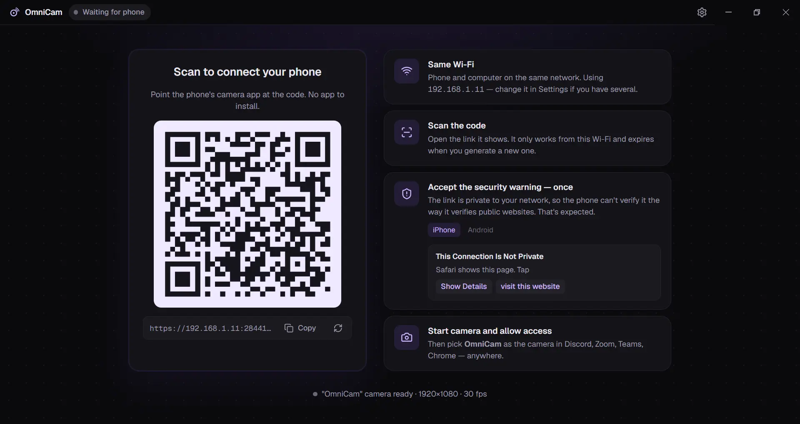
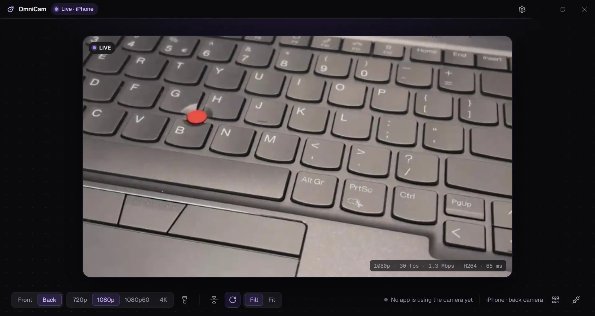
02 — Features
What you get
Up to 4K from the phone
720p, 720p60, 1080p or 4K capture, encoded by the phone's hardware H.264 encoder.
Front, back, torch
Switch cameras, toggle the flashlight, mirror, rotate, Fill or Fit, from the PC or the phone.
Out of the way
Runs from the tray; closing the window keeps the camera live. About a quarter of a CPU core at 1080p.
Stays on your network
Peer-to-peer WebRTC over your Wi-Fi. No relay servers, nothing uploaded anywhere.
Free and open
MIT licensed. Read every line on GitHub, build it yourself, or send a fix.
Saves the phone's battery when idle
Drops to 5 fps when no app is using the camera and the window is hidden.
03 — Microphone
The phone is your microphone too
Pick Camera + microphone or Microphone only before tapping Start, and switch any time from the phone or the PC, without reconnecting.
- Phone mic
- OmniCam
- VB-CABLE · OmniCam Microphone
- Your app
- Sent raw, like a USB mic. Your call app's noise suppression and echo cancellation do the rest.
- Microphone only keeps the camera off: far lighter on the phone's battery, nothing to decode on the PC.
- Stays on your network like the video, and is never played on your speakers.
- On Windows it needs VB-CABLE, a free virtual audio cable from VB-Audio: Windows only lets a signed driver add a microphone. OmniCam's setup guide shows each step with pictures, about two minutes.
- On Linux there is nothing to install: while OmniCam runs, apps get a microphone called OmniCam Microphone.
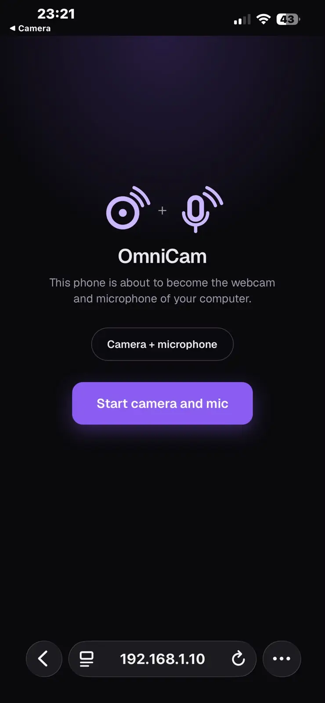
Camera + microphone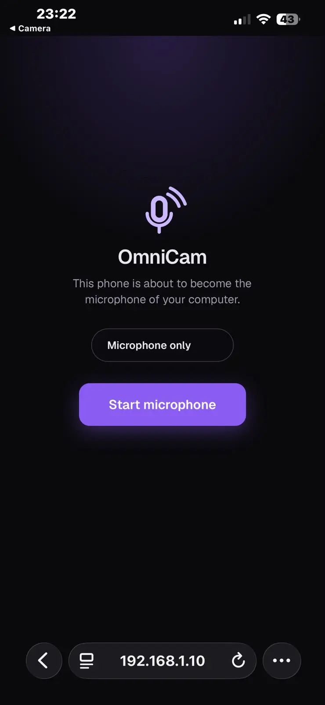
Microphone only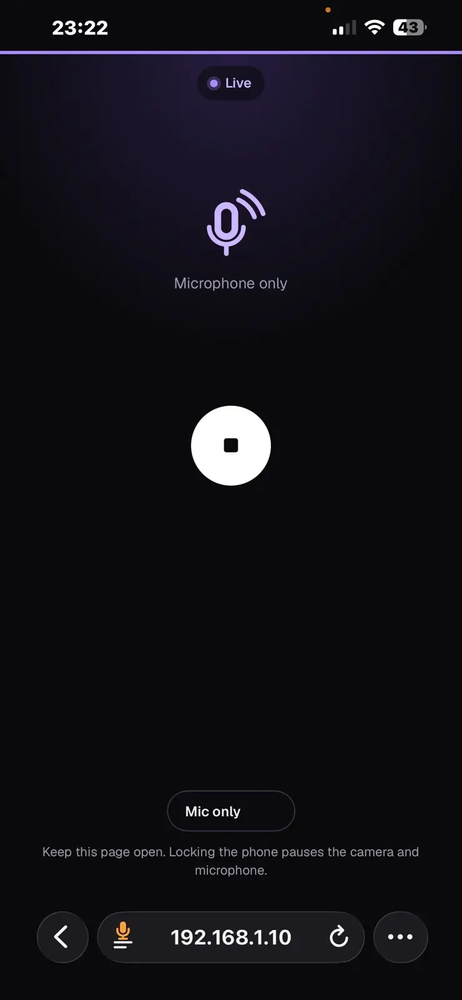
Live, camera off
04 — Linux
On Linux too
The same phone page, the same quality, and a microphone that needs nothing installed. The camera is a v4l2loopback device, the standard virtual camera on Linux, which apps list like any webcam.
Pick a download
- AppImage, any distribution: make it executable and run it. It updates itself.
- rpm for Fedora:
sudo dnf install ./OmniCam-x.y.z.rpm - deb for Debian and Ubuntu:
sudo apt install ./OmniCam-x.y.z.deb
x64, from GitHub Releases, like the Windows installer.
Which distributions
- Fedora 44 (GNOME, Wayland): tested end to end.
- Ubuntu, Debian, Mint, Pop!_OS: the deb or the AppImage. Supported, not tested yet.
- Arch, Manjaro, EndeavourOS and the rest: the AppImage. Supported, not tested yet.
Tried one of those? Say how it went.
The camera: one module, one click
Install v4l2loopback from your distribution (Fedora: akmod-v4l2loopback from RPM Fusion; Debian
and Ubuntu: v4l2loopback-dkms), then click Set up camera in OmniCam and enter your password once.
It stays set up after restarts. With Secure Boot on, OmniCam shows the one-time key enrolment: free, no BIOS change.
The microphone: nothing to install
While OmniCam runs, your apps get OmniCam Microphone, made with PipeWire or PulseAudio, no root. Your speakers stay the sound output. On GNOME without a tray extension, closing the window minimises OmniCam instead of hiding it.
05 — Settings
Settings you'll actually use
Five sections: Camera, Microphone, Connection, App and About. Each says how things stand, and a dot marks the one that needs you. Output resolution up to 4K, what to show when the phone pauses, which cable the phone's microphone plays into, light or dark, start when you sign in, updates. The frame rate follows the phone on its own.
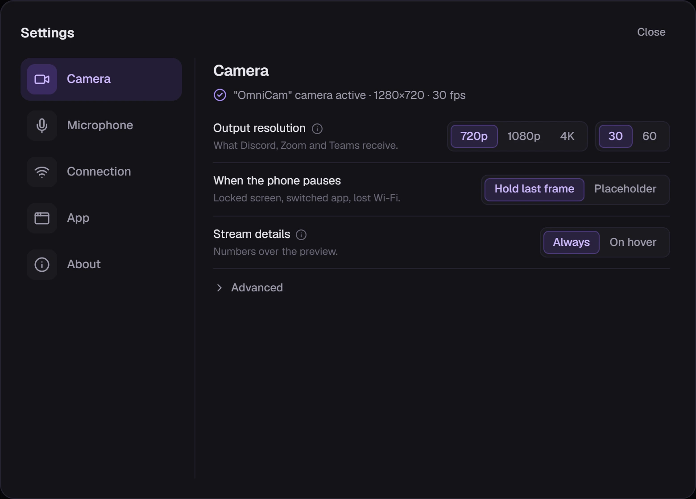
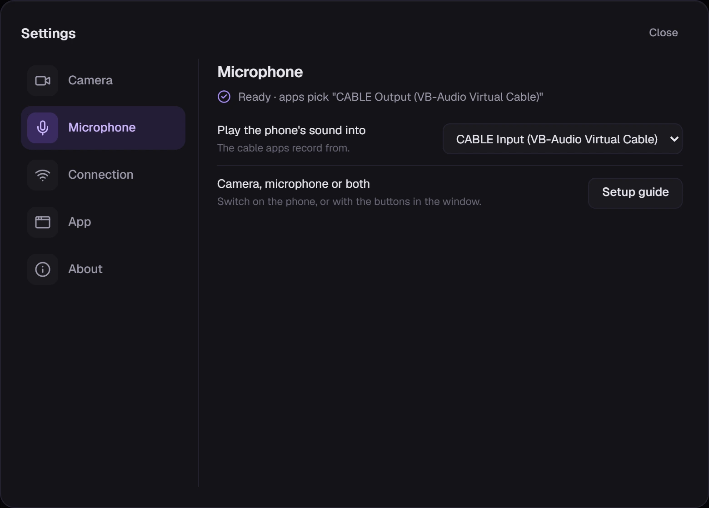
06 — Trust
Security and privacy, plainly
OmniCam asks for administrator rights and opens a port on your network. Here is exactly what it does with them.
What the installer changes
- Registers the OmniCam camera device (a DirectShow filter, 64- and 32-bit).
- Adds one Windows Firewall rule so your phone can reach OmniCam on your local network.
Both are listed on the installer's first page and removed when you uninstall. Nothing else runs as administrator.
On Linux, root is asked for once, through your desktop's password prompt, to set up the camera module: two small config files, removed with the package. The microphone needs no root.
What goes over the network
- Phone ↔ PC on your local network: the pairing page, the encrypted video, and the microphone's sound if you turn it on.
- PC → GitHub: a daily update check you can turn off in Settings.
No account, no telemetry, no analytics, no crash reports. Privacy details
Where the installer comes from
Every installer and Linux package is built by the project's public GitHub Actions workflow from the tagged source, and published on GitHub Releases. This site links there; it hosts no downloads of its own.
Code signing
Releases are moving to free code signing provided by SignPath.io, certificate by SignPath Foundation, so Windows shows a verified publisher. Until that is in place, Windows SmartScreen asks you to confirm: More info → Run anyway.
07 — First run
About the warning on your phone
Browsers only allow camera access over HTTPS. A certificate for a private address like
192.168.1.11 can't come from a public authority, so OmniCam creates its own on your PC, and the
phone's browser warns about it the first time.
Your phone is talking directly to your PC. Accepting it applies to that address on that network only, and you only do it once per phone and network.
iPhone: tap Show Details, then visit this website at the bottom.
Android: tap Advanced, then Proceed to 192.168…
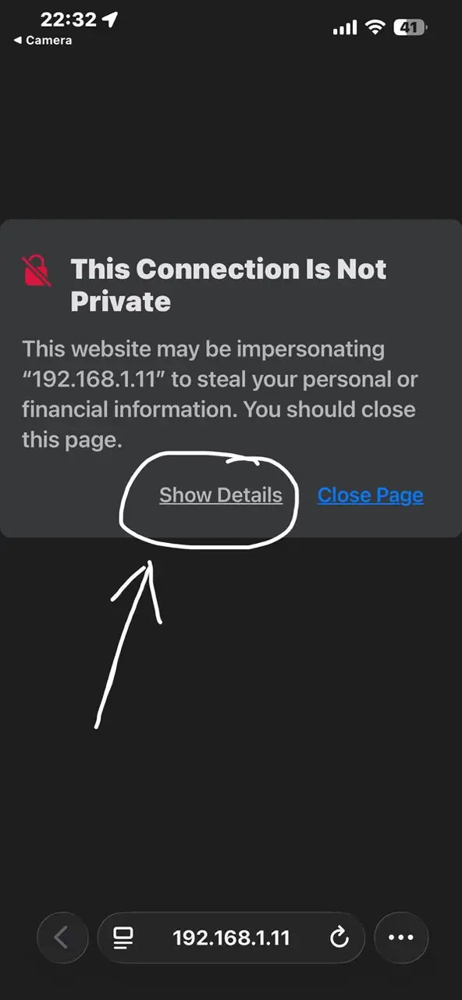
Tap Show Details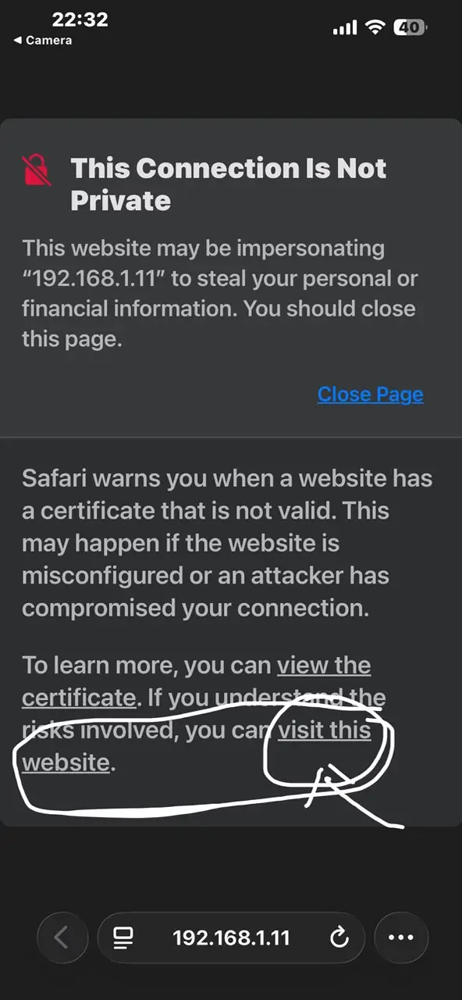
Tap visit this website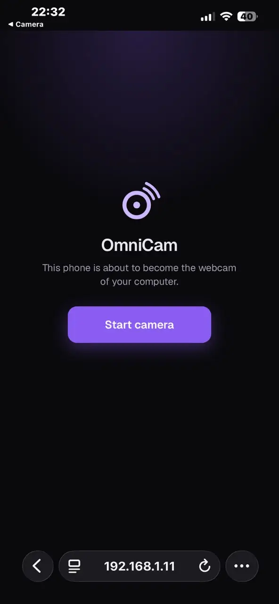
Tap Start camera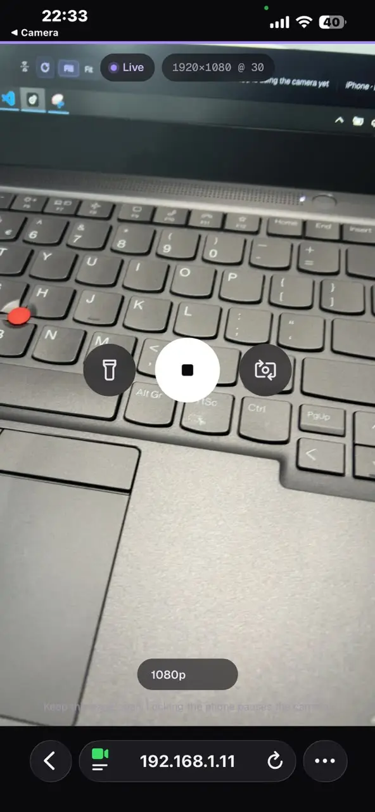
You're live
08 — Limits
What it doesn't do yet
- On Windows the microphone needs VB-CABLE. A free virtual cable from VB-Audio; an "OmniCam" microphone of its own needs a signed driver and is on the roadmap. Linux has one already.
- Windows and Linux, 64-bit. macOS is on the roadmap.
- DirectShow apps only on Windows. The Windows Camera app and the new Microsoft Teams won't list it yet.
- A kernel module on Linux. The camera needs v4l2loopback installed once, and with Secure Boot a key enrolled once.
- One phone at a time, and the page must stay open with the screen on, so long calls want a charger.
- No USB. Wi-Fi, or a phone hotspot with the PC on it.
Is it really free?
Yes. MIT license, no paid tier, no account, no ads. If it helps you, a star on GitHub or a bug report is the best thanks.
The phone can't open the page
Phone and PC must be on the same Wi-Fi, not a guest network or mobile data. Some routers isolate Wi-Fi devices from each other; use another network or a phone hotspot. With VPNs or virtual adapters, pick your Wi-Fi under Settings → Network interface.
"OmniCam" doesn't show up in my app
Restart the app; apps list cameras when they start. If it's still missing, run the installer again to re-register the camera. On Linux, OmniCam's own window says what is missing and how to fix it; apps installed from Flathub need device access.
How do I use my phone as a microphone?
Install VB-CABLE (free) and restart. On the phone pick Camera + microphone or Microphone only, then choose CABLE Output as the microphone in Discord, Zoom or Teams. Settings → Microphone → Set up in OmniCam walks through it with pictures and ticks each step off as you go. On Linux skip VB-CABLE: choose OmniCam Microphone.
Why does the microphone need VB-CABLE?
Call apps only list microphones that come from an audio driver, and Windows only loads drivers Microsoft has signed. VB-CABLE is a free, signed virtual cable: OmniCam plays the phone's sound into one end and your app records from the other. The camera needs nothing like it, because Windows lets an app add a camera without a driver. Linux lets an app add a microphone without a driver, so there OmniCam makes its own.
Does any video or sound go through the internet?
No. Video and sound go peer-to-peer from your phone to your PC on your local network. There are no relay servers.
How was it built?
By one developer, with AI assistance for parts of the implementation, documentation and testing. The README says where it helped and where it didn't, and the architecture notes explain every design decision.
Ready when you are.
Free, no account, nothing on the phone.
Windows
Windows 10 and 11, 64-bit
Run it and follow the steps. OmniCam keeps itself up to date after that.
Windows may ask you to confirm once. Why?
Linux
64-bit (x64)
The camera needs one kernel module. Setup steps